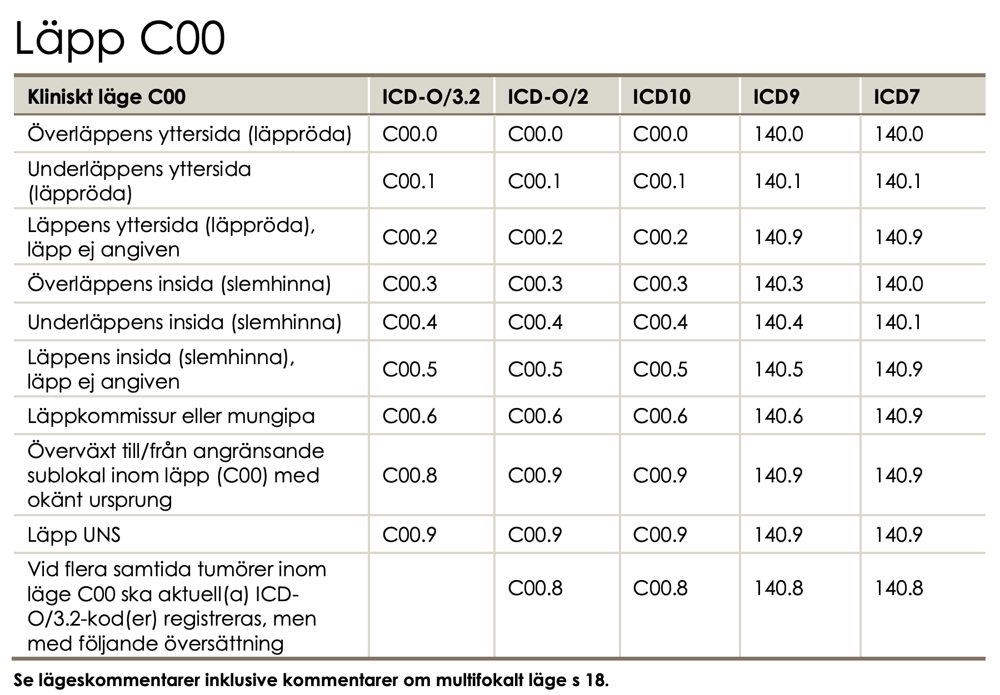
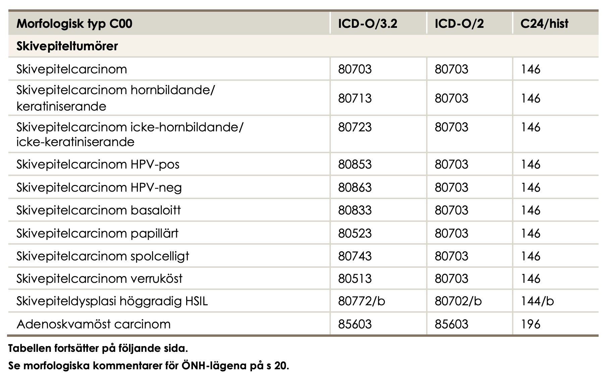
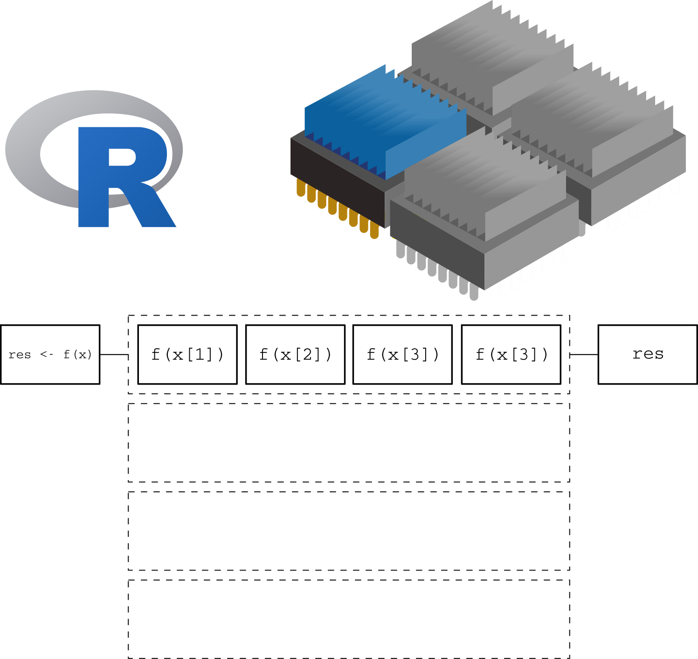
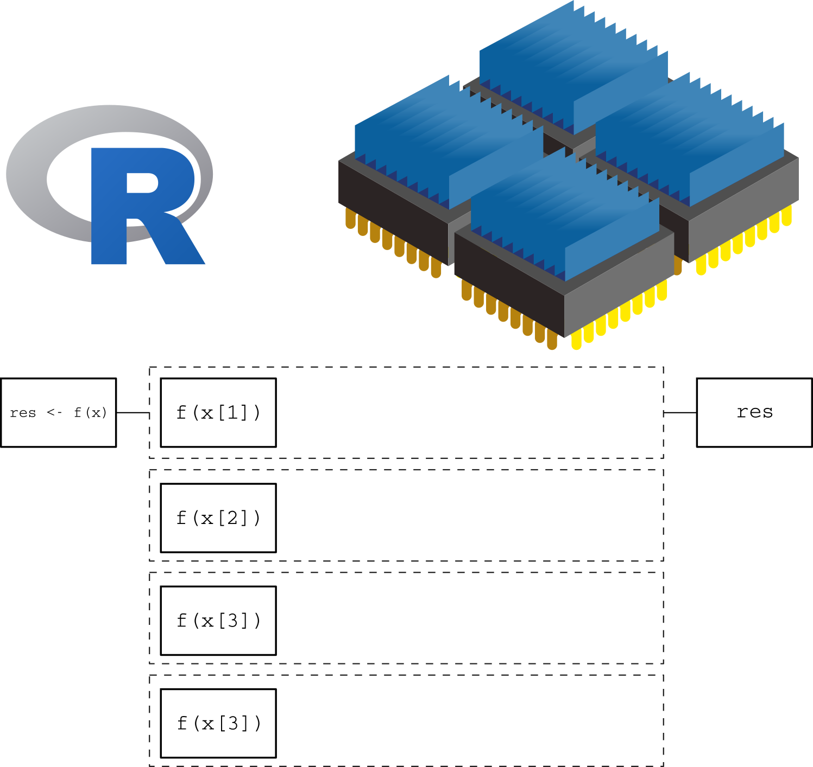

This document is generated automatically and contains all lecture slides.
When modifications are made to any of the lecture slides, this should be reflected here automatically.
If you are viewing the HTML version of the handouts, a static PDF might also be downloaded by clicking Other formats > Typst in the right side menu of the page.
If you are reading the PDF version of the document, the HTML version is availble here
Data (where does is come from, what does it contain)
Ethics and legal (how to handle sensitive data, what laws and regulations apply)
Project management (how to plan and execute a data project, version control, reproducibility, R specific packages for efficient data handling)
Data – what is it?
EU Data Act | Article 2, Definitions:
For the purposes of this Regulation, the following definitions apply:
‘data’ means any digital representation of acts, facts or information and any compilation of such acts, facts or information, including in the form of sound, visual or audio-visual recording;
‘metadata’ means a structured description of the contents or the use of data facilitating the discovery or use of that data;
‘personal data’ means personal data as defined in Article 4, point (1), of Regulation (EU) 2016/679;
‘non-personal data’ means data other than personal data;
Course structure
Lectures on different data sources/registers
🧑💻 Exercises on data management and analysis
R with some additional tools (Git, GitHub, targets, data.table)
A data project with written report and presentation
Morphology code according to ICD-O/2 ≥80103 and <85900.
Borderline tumours with 5th digit 3 in the morphology code according to ICD-O/2 and benign behaviour flag = 3.
Epithelial ovarian cancer:
Topography code according to ICD-O/2: C56.9.
Morphology code according to ICD-O/2 ≥80103 and <85900.
Malignant tumours with 5th digit 3 in the morphology code according to ICD-O/2 and benign behaviour flag blank.
Non-epithelial ovarian cancer:
Topography code according to ICD-O/2: C56.9.
Morphology code according to ICD-O/2 ≥85903 and <95900, with the exception of mesotheliomas with ICD-O/2 codes in the interval ≥90500 and <90600.
Malignant tumours with digit 3 as the fifth digit in the morphology code according to ICD-O/2.
Exception for granulosa cell tumours, where all cases with morphology codes according to ICD-O/2 in the interval ≥86200 and ≤86223 are included.
Malignant tumours of the fallopian tube:
Topography code according to ICD-O/2: C57.0.
Morphology code according to ICD-O/2 ≥80003 and <95900, with the exception of mesotheliomas with ICD-O/2 codes in the interval ≥90500 and <90600.
Malignant tumours with digit 3 as the fifth digit in the morphology code according to ICD-O/2.
Exclusion
Epithelial ovarian cancer and borderline tumours of the ovary
Cases with behavior codes 0, 1, 2, 6, or 9 as the fifth digit in the ICD-O/2 morphology code are excluded.
Morphology codes according to ICD-O/2 <80103 and ≥85900 are excluded.
Non-epithelial ovarian cancer
Cases with digits 0, 1, 2, 6, or 9 as the fifth digit in the ICD-O/2 morphology code are excluded, with the exception of granulosa cell tumours, for which cases with ICD-O/2 morphology codes in the interval ≥86200 and ≤86223 are included even when the final digit is 0, 1, 2, or 3.
Morphology codes according to ICD-O/2 <85903, as well as codes in the intervals ≥90500 and <90600 (mesotheliomas) and ≥95900, are excluded.
Tumours of the fallopian tube
Cases with behaviour codes 0, 1, 2, 6, or 9 as the fifth digit in the ICD-O/2 morphology code are excluded.
Morphology codes according to ICD-O/2 in the intervals ≥90500 and <90600 (mesotheliomas) and ≥95900 are excluded.
For all diagnoses, cases are excluded if the diagnosis is based solely on:
clinical examination (basis of diagnosis 1),
imaging procedures including radiography, scintigraphy, ultrasound, MRI, CT (or equivalent examinations) (basis of diagnosis 2),
autopsy with or without histopathological examination (basis of diagnosis 4 or 7),
surgery without histopathological examination (basis of diagnosis 6), or
other laboratory investigations (basis of diagnosis 8).
cases with age <18 years are excluded.
Coverage and completeness
🏥 Institutional coverage: proportion of all eligible units/clinics that are connected to the registry
e.g., 90% of hospitals performing the procedure are connected
Should be known by the “register holder”
🤒 Case coverage: proportion of patients who should have been reported from connected units that are actually included
e.g., 85% of eligible patients registered
The aim is to use 100 % but this is not always possible
Data completeness: proportion of required data fields that are filled in for the registered patients
🚬 e.g., 95% of patients have smoking status recorded
🩸 e.g., 80% of patients have blood pressure data available
What is recorded?
👩🏻⚖️ Some registers are mandated by law and regulations
Quality registers often have a steering committee and register holder
Reseasrh initiated databases according to specific protocols
Data linking
Unique personal identifier
Not in every country!
Social security number similar purpose but not as widely used
study specific id number
HSA (“Hälso- och sjukvårdens adressregister” for staff and organizations)
Lecture handouts main source for examination (seminar ES1 and possibly DISA exam).
Article (Vukovic et al. 2022). Focus on the introduction, the section “GDPR‐related enablers and barriers to cross‐country health data exchange in Europe” (in the results section incl. figures and tables), discussion and conclusions. Examined as part of seminar ES1 (not the DISA exam).
Next lecture: Swedish legislation (including associated reading). Examined as part of seminar ES1 (not the DISA exam).
Consequence: (Nguyen 2022, ch. 4). Read the beginning. Skip “Medical Information Mart for Intensive Care”. Read the “Synthea” section. The “Synthea” section does not have a legal focus but the legal parts explains why we use this data. Read for your own understanding (not examined).
European legislation
GDPR (our focus)
Defines the legal conditions for processing personal data
Focuses on protection, safeguards, and accountability
European Health Data Space (EHDS)
Establishes a European framework for access to health data for research, statistics, and policy.
Focuses on data access, governance, and interoperability
Increases opportunities for cross-national health statistics
EU Data Act
Regulates who may access data and under what conditions, across sectors.
Indirectly relevant for health statistics through device-generated and digital service data.
Important
Legal and governance frameworks enable access to data, but statistical expertise remains essential for ensuring data quality, valid inference, and meaningful interpretation.
EU law vs Swedish law
EU legislation tends to be more detailed in the legal text itself
This is because EU law must be:
applied uniformly across many different legal systems
interpreted without relying on national preparatory works
Interpretation of EU law relies mainly on:
the wording of the legislation
recitals (non-binding explanations before the articles describing the purpose and context).
Swedish legislation is often:
shorter and less detailed in the statutory text
supplemented by extensive preparatory works (förarbeten)
In Sweden, preparatory works are a central interpretative source for courts and authorities
➡️ The difference reflects different legislative techniques, not necessarily a difference in regulatory ambition.
NoteSource
The GDPR is available in all official EU languages via EUR-Lex. Take a quick look to get a very brief overview. However, it is recommended reading only if you suffer from insomnia — it is not required for fulfilling the course requirements!
GDPR
Regulation (EU) 2016/679 (GDPR)
Enforced since May 25, 2018
Regulates the processing of personal data
Aims to protect the privacy and rights of individuals
Sets out rules for data controllers and processors
European Union (EU)
GDPR applies directly and uniformly as law
No national implementation required
Member States may:
introduce supplementary legislation
allow legal exceptions, e.g. for:
research
public interest
health data
European Economic Area (EEA)
Countries: Norway, Iceland and Liechtenstein
GDPR applies via the EEA Agreement
Implemented into national law
In practice:
very similar application as within the EU
same core principles, rights, and obligations
United Kingdom (UK)
EU GDPR no longer applies directly after Brexit
Replaced by:
UK GDPR
Data Protection Act 2018
Switzerland
Not part of EU or EEA
GDPR does not apply as law
Instead: Federal Act on Data Protection (FADP)
Revised to align closely with GDPR
International laws
Note that other countries have different laws and regulations
In USA, for example, HIPAA regulates the use and disclosure of protected health information (PHI)
Different states have different laws as well
When collaborating internationally, compliance with all relevant laws is required
Definitions
GDPR article 4:
Personal data
means any information relating to an identified or identifiable natural person (data subject); an identifiable natural person is one who can be identified, directly or indirectly, in particular by reference to an identifier such as a name, an identification number, location data, an online identifier or to one or more factors specific to the physical, physiological, genetic, mental, economic, cultural or social identity of that natural person.
Processing
means any operation or set of operations which is performed on personal data or on sets of personal data, whether or not by automated means, such as collection, recording, organization, structuring, storage, adaptation or alteration, retrieval, consultation, use, disclosure by transmission, dissemination or otherwise making available, alignment or combination, restriction, erasure or destruction;
Pseudonymisation
means the processing of personal data in such a manner that the personal data can no longer be attributed to a specific data subject without the use of additional information, provided that such additional information is kept separately and is subject to technical and organizational measures to ensure that the personal data are not attributed to an identified or identifiable natural person;
Controller
means the natural or legal person, public authority, agency or other body which, alone or jointly with others, determines the purposes and means of the processing of personal data […]
Processor
means a natural or legal person, public authority, agency or other body which processes personal data on behalf of the controller;
Consent of the data subject
means any freely given, specific, informed and unambiguous indication of the data subject’s wishes by which he or she, by a statement or by a clear affirmative action, signifies agreement to the processing of personal data relating to him or her;
Personal data breach
means a breach of security leading to the accidental or unlawful destruction, loss, alteration, unauthorized disclosure of, or access to, personal data transmitted, stored or otherwise processed;
Data concerning health
means personal data related to the physical or mental health of a natural person, including the provision of health care services, which reveal information about his or her health status;
Legal grounds for processing personal data:
GDPR article 6 (1):
Processing shall be lawful only if and to the extent that at least one of the following applies:
the data subject has given consent to the processing of his or her personal data for one or more specific purposes; processing is necessary for the performance of a contract to which the data subject is party or in order to take steps at the request of the data subject prior to entering into a contract;
processing is necessary for compliance with a legal obligation to which the controller is subject;
processing is necessary in order to protect the vital interests of the data subject or of another natural person;
processing is necessary for the performance of a task carried out in the public interest or in the exercise of official authority vested in the controller;
processing is necessary for the purposes of the legitimate interests pursued by the controller or by a third party, except where such interests are overridden by the interests or fundamental rights and freedoms of the data subject which require protection of personal data, in particular where the data subject is a child.
processing is necessary for compliance with a legal obligation to which the controller is subject under Union or Member State law requiring the processing of personal data for a specific purpose.
Legal ground (d) is the most relevant if you work with secondary data in the public sector (research and reporting etc). (a) is relevant to collect primary data for research etc. (e) is a delicate one …
Processing of special categories of personal data
GDPR Article 9 (1):
Processing of personal data revealing racial or ethnic origin, political opinions, religious or philosophical beliefs, or trade union membership, and the processing of genetic data, biometric data for the purpose of uniquely identifying a natural person, data concerning health or data concerning a natural person’s sex life or sexual orientation shall be prohibited. 😱
But …
Paragraph 1 shall not apply if one of the following applies:
the data subject has given explicit consent to the processing of those personal data for one or more specified purposes […]
processing is necessary for reasons of public interest in the area of public health, such as protecting against serious cross-border threats to health or ensuring high standards of quality and safety of health care and of medicinal products or medical devices […]
processing is necessary for archiving purposes in the public interest, scientific or historical research purposes or statistical purposes (🥳) in accordance with Article 89(1) based on Union or Member State law which shall be proportionate to the aim pursued, respect the essence of the right to data protection and provide for suitable and specific measures to safeguard the fundamental rights and the interests of the data subject.
Safeguards
GDPR article 89:
Safeguards and derogations relating to processing for archiving purposes in the public interest, scientific or historical research purposes or statistical purposes
Processing for archiving purposes in the public interest, scientific or historical research purposes or statistical purposes, shall be subject to appropriate safeguards, in accordance with this Regulation, for the rights and freedoms of the data subject. Those safeguards shall ensure that technical and organisational measures are in place in particular in order to ensure respect for the principle of data minimisation. Those measures may include pseudonymisation provided that those purposes can be fulfilled in that manner. Where those purposes can be fulfilled by further processing which does not permit or no longer permits the identification of data subjects, those purposes shall be fulfilled in that manner.
Where personal data are processed for scientific or historical research purposes or statistical purposes, Union or Member State law may provide for derogations […] so far as such rights are likely to render impossible or seriously impair the achievement of the specific purposes, and such derogations are necessary for the fulfilment of those purposes.
Technical Safeguards
Examples of technical safeguards include:
Pseudonymisation
Encryption of personal data
Access controls and authentication
Logging and monitoring of access
Secure storage and transmission
Use of secure software environments often enforced by organizational standards
Organisational Safeguards
Examples of organizational safeguards include:
Defined roles and responsibilities
Internal policies and procedures
Staff training and confidentiality obligations
Data protection by design and by default
Incident and breach response procedures
Documentation and accountability measures
Working for a health care organization might require an agreement of secrecy
Data Minimisation and Purpose Limitation
Only data that are necessary should be processed
Data are processed only for specified purposes
Access is limited to authorized personnel
Retention periods are defined and respected
Pseudonymisation and Anonymisation
Pseudonymisation reduces risks while allowing reuse of the data
Identifiers are kept separately and protected
Anonymisation removes data from GDPR scope (if irreversible)
Important
Pseudonymisation \(\neq\) Anonymisation
Removing the Swedish personal identification number (PIN) is not a guarantee for pseudonymisation
Data Controller
The entity that determines the purposes and means of the processing of personal data
Bears the primary legal responsibility
Responsible for:
Lawful basis
Compliance with GDPR principles
Transparency and information to data subjects
Appropriate technical and organizational measures
Typical examples:
Public authorities
Universities
Regions and municipalities
Data Processor (PUB) under GDPR
Processes personal data on behalf of the controller
Acts only on documented instructions from the controller
May not determine purposes of processing
Has direct responsibilities for:
Security of processing (Article 32)
Confidentiality
Must be governed by a data processing agreement
Controller–Processor Relationship
A formal Data Processing Agreement (DPA) is required
The agreement must specify:
Subject matter and duration
Nature and purpose of processing
Types of personal data
Categories of data subjects (patients, students, citizens, …)
Security measures
The controller remains responsible even when processing is outsourced
Example: Sahlgrenska
If a researcher work at the Sahlgrenska university hospital, VGR might be the data controller (personuppgiftsansvarig; PUA)
If he/she asks for statistical consulting from the Sahlgrenska Academy, GU might be the data processor (personuppgiftsbiträde; PUB)
European Health Data Space (EHDS)
What is it?
EHDS is an EU-wide legal and technical framework for the use and sharing of health data
It aims to:
improve access to health data across borders
support healthcare, research, statistics, and policy-making
Focuses on data access and governance
Two Main Pillars
Primary use of health data
Use of data for individual patient care
Cross-border access to electronic health records
Secondary use of health data for
statistics
scientific research
public health
policy evaluation and innovation
Implementation Timeline
2025: EHDS regulation enters into force
2025–2027: Development of implementing and technical acts
From ~2029 onward:
national infrastructures become operational
cross-border access for secondary use starts to function in practice
How EHDS Relates to GDPR
EHDS does not replace GDPR
GDPR continues to govern:
personal data protection
lawful bases
safeguards for health data
EHDS provides procedures and structures for lawful data access under GDPR
➡️ GDPR defines whether data may be processed
➡️ EHDS defines how data can be made available
Why EHDS Matters for Statisticians
EHDS explicitly recognizes statistics as a legitimate purpose
It facilitates access to:
large-scale health datasets
cross-national data sources
It increases demand for:
data quality assessment
metadata interpretation
harmonization and comparability analyses
EHDS Does Not Do This
EHDS does not:
define statistical methods
ensure data quality automatically
guarantee comparability across countries
Legal and technical access ≠ valid statistical inference
EU Data Act
What Is It?
The Data Act is an EU regulation on access to and sharing of data
Focuses mainly on:
data generated by connected products and digital services (IoT)
business-to-business (B2B) and business-to-government (B2G) data sharing
It is not a data protection regulation
➡️ The Data Act is about who may access data and under what conditions.
How the Data Act Relates to Health Data
The Data Act does not primarily target health registers
However, it may affect:
data generated by medical devices
digital health services
health-related IoT data
➡️ Health data may fall under the Data Act depending on how it is generated.
The Swedish legal system will only be examined during the seminar ES1 (not in the DISA exam). You are allowed to use the sources during the seminar (no need to memorize individual laws and paragraphs by names and numbers). Nevertheless, read the literature before the seminar!
Report (Görman 2024). Most important: p. 26-32, 42-45, 49 and 75-90.
Swedish reading students might enjoy lagen.nu for source material (however, this is not required for the course).
A translation using Google translate might be used for non Swedish reading students. However, please note that legal texts are formally valid only in their original language.
Swedish legal system
Backgrund to Swedish law
Fundamental laws (“grundlagar”) decided by the parliament but stable over time
Asort of codified constitution distributed in four parts
The Freedom of the Press Act (Tryckfrihetsförordningen) of relevance
The “big blue book” is only a smaller collection of important laws
ordinances (“förordning”) from the government to implement laws
regulations (“föreskrifter”) from authorities to implement laws and ordinances
Two main branches of law
Civil and criminal law:
state what you can not do (everything else is “legal”)
Handled by ordinary courts
Ex: Brottsbalken kap 20 om tjänstefel m.m. (The Swedish Penal Code (Brottsbalken), Chapter 20 — Offences Relating to Public Office.)
Public law: relationship between individuals and the state etc
state what the public authorities must and can do (everything else is “illegal”)
Handled by administrative courts
What we mostly care of here
NoteThe principle of freedom vs. the principle of legality
Private actors are generally free unless restricted by law, while public authorities require explicit legal authority to act.
Fundamental law
The Freedom of the Press Act (TF)
(🇸🇪: Tryckfrihetsförordningen)
World’s oldest freedom of the press law (since 1766)
Chapter 2: Public access to official documents
Applies to public authorities and institutions
Including health care registers and medical records held by public authorities
In order to promote a free exchange of opinion, comprehensive and pluralistic information, and free artistic creation, everyone shall have the right of access to official documents. [TF 2.1]
But there are exceptions (TF 2.2): - e.g., if disclosure would violate privacy or national security - if so, the government has the right to provide ordinary laws that restrict access (which they do!)
Confidentiality
The Public Access to Information and Secrecy Act (OSL)
(🇸🇪: Offentlighets- och sekretesslagen)
Law that regulates public access to official documents and confidentiality
Applies to public authorities and institutions
Defines what information is considered confidential and under what circumstances
OSL Chap 21
Confidentiality for private individuals’ personal circumstances no mater the context
E.g., health data, economic circumstances, family relations
OFS 21.1: Secrecy applies to information concerning an individual’s health or sexual life, such as information about illnesses, substance abuse, sexual orientation, gender reassignment, sexual offenses, or other similar information, if it can be assumed that disclosure of the information would cause significant harm to the individual or to someone closely related to them.
OSL Chap 24
Secrecy for the protection of individuals in research and statistics.
A few special research databases etc
Some regulations for research ethics boards
OSL Chapter 25
Secrecy for the protection of individuals in activities relating to health and medical care etc.
OFS 25.1: Within the health and medical care services, secrecy applies to information concerning an individual’s state of health or other personal circumstances, unless it is clear that the information may be disclosed without causing harm to the individual or to someone closely related to them. The same applies to other medical activities, such as forensic medical and forensic psychiatric examinations, insemination, in vitro fertilization, abortion, sterilization, circumcision, and measures to prevent communicable diseases.
Exceptions exists,
for example to submit medical patient data to quality registers
to share data between public organizations for research purposes or statistics (OFS 25.11 p. 5).
OSL Chapter 10
Provisions on disclosure overriding secrecy and provisions on exemptions from secrecy
OFS 10.28: Secrecy does not prevent information from being disclosed to another authority where a duty to provide information follows from an act or an ordinance.
This would apply to data sharing for research purposes when there is a legal basis for that
Health care data
The Patient Data Act (PDL)
(🇸🇪: Patientdatalagen)
regulates the processing of personal data within health and medical care in Sweden.
Applies to healthcare providers (public and private).
Main objectives:
Protect patient privacy
Ensure safe and effective healthcare
Enable secondary use of health data under strict conditions
Chapter 7 PDL
National and regional quality registers
Opt-out for patients (every one is included by default until they opt out)
PDL 7.4: Personal data in national and regional quality registers may be processed for the purpose of systematically and continuously developing and ensuring the quality of healthcare.
PDL 7.5: Personal data processed for the purposes set out in Section 4 may also be processed for the purposes of
the production of statistics,
estimating numbers for the planning of clinical research,
research within health and medical care,
disclosure to a party that will use the data for purposes referred to in Sections 1 and 3 or in Section 4, and
…
The Health Data Registers Act
(🇸🇪: Lag om hälsodataregister [SFS 1998:543])
This law regulates health data registers outside the health and medical care system. A new law is being proposed to replace this one.
§ 1: A central administrative authority within the health care sector may carry out automated processing of personal data in health data registers. The central administrative authority that carries out the processing of personal data is the controller.
§ 3: Personal data in a health data register may be processed for for the following purposes:
the production of statistics,
follow-up, evaluation and quality assurance of health and medical care, and
research and epidemiological studies
Specific registers
Register (Swedish)
Register (English)
Governing act / ordinance
Folkbokföringen
Population Register
Population Registration Act (1991:481); Population Registration Ordinance (1991:749)
Totalbefolkningsregistret (RTB)
Total Population Register
Official Statistics Act (2001:99); Official Statistics Ordinance (2001:100)
Nationella patientregistret
National Patient Register
Health Data Act (1998:543); Ordinance on the National Patient Register (2001:707)
Cancerregistret
Swedish Cancer Register
Health Data Act (1998:543); Cancer Register Ordinance (2001:709)
Dödsorsaksregistret
Cause of Death Register
Health Data Act (1998:543); Cause of Death Register Ordinance (2001:709)
Läkemedelsregistret
Prescribed Drug Register
Act on the Prescribed Drug Register (2005:258); Ordinance (2005:363)
Medicinska födelseregistret
Medical Birth Register
Health Data Act (1998:543); Medical Birth Register Ordinance (2001:708)
Tandhälsoregistret
Dental Health Register
Health Data Act (1998:543); Dental Health Register Ordinance (2008:194)
Other legislation
The Archives Data Act (ADL)
(🇸🇪 Arkivdatalagen)
Regulates the management of public records and archives
Applies to public authorities and institutions
Differnt authorities then have different rules for how long data must be kept
For example research data is often required to be kept for at least 10 (or 25) years
GDPR and Swedish law
GDPR is directly applicable in Sweden
There are references to GDPR in Swedish laws such as PDL and OSL
Swedish laws may provide additional regulations and requirements beyond GDPR
Should be easy to collaborate across EU borders due to GDPR, but more difficult with non-EU countries
Statistics and research?
A statistical purpose refers to the production of aggregated information describing groups or populations (e.g. summary tables or prevalence estimates), and does not include analyses or decisions concerning identifiable individuals (e.g. individual predictions or case assessments).
Does not require particular statistical methods etc
Research refers to systematic activities aimed at generating new, generalisable knowledge, and excludes activities focused on individual decisions, control, or routine administration.
The Ethical Review Act (EPL)
(🇸🇪: Etikprövningslagen)
Regulates ethical review of research involving humans (including their data!)
Had received some criticism and might be revised
Applies to research conducted in Sweden
Requires ethical review and approval by the Swedish Ethical Review Authority
Aims to protect the rights, safety, and well-being of research participants
Based on the Declaration of Helsinki and other international ethical guidelines
One application for each new research project
Ammendments for changes in already approved projects
Application fees applies
Access to data
Public, non-sensitive individual information
Certain individual data are public by default (e.g. declared income, address).
Such information may be accessed upon request from authorities like the Swedish Tax Agency, unless specific secrecy provisions apply.
Might still not be used for research without ethical review
Aggregated data (including health data)
Aggregated information that cannot be linked to identifiable individuals may often be disclosed.
Aggregated health statistics produced through “automated processes” might be disclosed upon request.
Individual-level health data for statistical purposes
Access to identifiable health data is possible within authorities conducting statistical activities.
This typically requires that the data are used solely for statistical purposes,
Individual-level data via register-holding authorities
Identifiable data may be accessed by staff or contractors working on behalf of the authority responsible for the register.
Individual-level data for research
Access to identifiable personal or health data for research purposes generally requires:
approval under the Ethical Review Act,
a lawful basis under GDPR,
and a disclosure decision under OSL by the data-holding authority.
Data are typically provided under strict conditions (e.g. pseudonymisation, secure environments).
(“The Unix Shell: Summary and Setup” 2026) introduces the Unix shell and the file system, which are essential parts for using git. Read and practice according to the instructions. (You may use the Terminal tab in RStudio or similarly in Posotron). Only the first sections are required:
(Rodrigues 2023, ch. 4) introduces the basics of Git for R users and applies to all common operating systems. Read and practice by following the instructions.
Staples (2023) illustrates the constant evolution in technology. As a professional, you should not expect that what you learn in this course will stay relevant for ever. This article is a good illustration of how the linguistic use of R has changed in less than a decade. It is also a practical example of how you can use GitHub in a slightly different way and it touches briefly on {data.table}, which we will introduce later. It also illustrates that a lot of R code is not written for statistical analysis (the last and final step) but for data management. The article also mentions some statistical techniques which you will meet in later courses (ignore the details for now).
Motivation
It is widely acknowledged that the most fundamental developments in statistics in the past 60 years are driven by information technology (IT). We should not underestimate the importance of pen and paper as a form of IT but it is since people start using computers to do statistical analysis that we really changed the role statistics plays in our research as well as normal life.
Although: “Let’s not kid ourselves: the most widely used piece of software for statistics is Excel.”” /Brian Ripley (2002)
ImportantPositron assistant (mentioned in the video)
This feature will most likely be disabled in any secure working environment. Such environments often have strict rules about data privacy and security, which may conflict with the assistant’s functionality. Health data in SENSITIVE and SECURE environments must not be shared with external services, including AI assistants, to comply with data protection regulations and institutional policies.
It is recommended to not rely on such tools during the course (even if all our data is synthetic). If you start to rely on such tools, you might get difficulties the day you work with real data (might lead to prosecution for “brott mot tystnadsplikten” which is not only public, but actually civil law (“Brottsbalken”) with prison sentence as a possibility). Society put an extreme emphasis on protecting health data, and rightfully so!
Issue tracking is not part of Git but is implemented in most (if not all) hosting platforms.
Used for bug reports and discussions between developers and users
Issues can be closed when fixed/adressed but are still found in the history
Each issue gets a number (in order) and those can be referenced in commit messages etc (ex: Fix #37, which will automatically close the issue)
Version Control Today
Modern usage includes:
Code
Documentation
Data analysis (scripts, notebooks)
Configuration and infrastructure
Git is integrated into:
IDEs (RStudio, VS Code, Positron)
CI/CD pipelines
Cloud platforms
Version Control Beyond Code
Today, version control supports:
Reproducible research
Collaborative writing
Data science workflows
Teaching and learning
📌 Version control is now a core professional skill.
WARNING!
Not everything should be shared!
Scripts and documentation yes!
But Health data is sensitive!
Do not share it!
Avoid unintentional sharing!
Private repositories are still shared with hosting provider!
Avoid explicit file paths and sensitive info in scripts!
Can give information about data location and internal structure!
No hard-coded passwords or API keys!
Git basics
(After installing the Git software)
Collect all files related to a project in a folder
Initialize a git repository in that folder
Make changes to files
Stage changes for commit
Commit changes with a message
Possibly push commits to remote repository
cd path/to/your/project
git init
git status
## make changes to files
git add filename1 filename2
git commit -m "Descriptive message about changes"
git remote add origin
Video tutorials
The video below is a good start to understand the basic concepts of Git and GitHub (and there are others to be found on YouTube).
Inspirational video
Watch this video even though some parts might be overwhelming. It gives a good overview of the current state (2025), even though many things will be too advanced for this course (it is not specifically aimed for statisticians or R users).
Important.gitignore
The .gitignore file is very important in settings with health data! Pay close attention to this section of the video!
Git in Positron
Remember that Positron is build on Code OSS (which shares a lot of features with VS Code).
Branching and merging is possible but we will not cover that here.
Short official introduction from Microsoft:
More detailed introductions. Watch both! The first one is based on a Windows version of VS code and the second on Mac but the concepts are the same:
NoteOverwhelmed?
This video includes some parts which might be overwhelming if you are new to Git and GitHub. Don’t worry! You don’t need to understand everything right away. Just try to follow along with the basic concepts and steps. You will get more comfortable with practice.
Statistics projects
Not a single R script
Real projects are more complex than a single R script!
Multiple scripts
Multiple data files
Documentation
Reports
Version control
Reproducible workflows
Project structure
Common file structures
Help you organize your thoughts
Help others to collaborate
simplifies paths used in your code
Example structure
/.../my_project/
├── README.md - project documentation
├── TODO - what should be done next?
├── .git - handled by git (hidden folder)
├── .gitignore - used by git but your responsibility!
├── data/ - your data files (not under version control!)
├── cancer.csv
└── patients.qs
├── R/ - your saved R functions
├── function1.R
└── function2.R
├── reports/
└── _targets.R - targets pipeline script
Store your data files here as they are when you get them
Avoid any modifications to the raw files!
It is very easy to forget what you do if it can not be traced by code
Do NOT include this folder in version control!
Git is not good at handling large files
Sensitive data should not be shared!
Add data/* to your .gitignore file
In realistic projects, data might come in varying formats
csv, txt, xlsx, sas7bdat, sav, dta, etc
some files might be very big (gigabytes not uncommon)
R folder
Store your R functions here
Document their purpose inline!
Helps you to reuse code
Easier to read main scripts
Easier to test and debug code
Easier to share code between projects
reports folder
Store your reports here
Quarto documents
Documemnt your analysis
Include figures and tables
Share with external collaborators
Computer practice
In ECS1 we will use Positron and git/GitHub in action!
Also see the “Reading and practicing” section above for a more in-depth introduction (homework).
What you should know
Reflect on the use of different software and how the rapid development in this field interplay with other important aspects of our field
Be able to describe the principles of basic git commands (init, add, stage, commit, push, pull) and what they are used for (may be theoretical questions in the written exam)
Use Git and GitHub in practice (but you can choose to do it either by commands or the GUI), this will be assessed in computer exercises and a later project.
Similarily, you need to organize your projects according to best practice (but we will be the focus of EL5).
Baker (2016) and Oliveira Andrade (2025) motivates why reproducible analysis is important!
Peng and Hicks (2021) introduce and elaborate more on the subject.
Nguyen (2022) only read section “Basic Introduction to Docker and Containers” in chapter 2 (you do not need to install Docker for this course, just be aware of the concept)
Kavianpour et al. (2022) introduces Trusted Research Environment as well as some perceived challenges with those (we will not use such environments in the course but this is likely the reality you need to cope with later on in your career, so you should get familiar with the concept).
TipConsider
After reading papers like Baker (2016) and Oliveira Andrade (2025) , one might be tempted to conclude that nothing is trustworthy — not even our own analyses. If every result comes with assumptions, uncertainty, and potential bias, what does trust really mean? Statisticians live in a world of probabilities, but most people prefer certainty.
Reproducibility might sound like a good thing but how much does the technical details matter if we are not allowed to freely share the underlying health care data anyway?
A workshop with 7 parts was given at the R Medicine conference 2025. Practice according to part 1-3 (part 4-7 are slightly outside the scope of the course and only recommended if you have additional time and interest).
The full video is close to three hours long, but this includes breaks as well as the more advanced topics that are not mandatory (only the first 92 minutes, which includes several 10 min breaks is mandatory). Nevertheless, it is recommended to watch the full video (just watching part 4-7 for inspirational purposes without doing the exercises and without any expectation to fully grasp all the details).
RStudio is used in the recording. Please try to use Positron; however, feel free to revert to RStudio this time if following the instructions in one application while working in another feels overwhelming.
You may recognize some of the material from Part 3, as presented during the lecture
This practice is homework (no dedicated computer session is targeting targets but you should use at least some components of it in a later project, so you should practice the basics now)!
Motivational quotes
An article about computational science in a scientific publication is not the scholarship itself, it is merely advertising of the scholarship. The actual scholarship is the complete software development environment and the complete set of instructions which generated the figures. / Buckheit & Donoho
[It is important to have] a clear understanding of how data analysis was conducted when critical life and death decisions must be made. / Peng et al. 2021
Reproducible analysis
The definition of reproducible research generally consists of the following elements.
A published data analysis is reproducible if the analytic data sets and the computer code used to create the data analysis are made available to others for independent study and analysis
This is rather vague …
Why is this a problem?
Many, even simple, results depend on a precise record of procedures and processing and the order in which they occur.
Many statistical algorithms have many tuning parameters that can dramatically change the results if they are not inputted exactly the same way as was done by the original investigators.
If any of these myriad details are not properly recorded in the code, then there is a significant possibility that the results produced by others will differ from the original investigators’ results.
Recap folder structure
/.../my_project/
├── README.md - project documentation
├── TODO - what should be done next?
├── .git - handled by git (hidden folder)
├── .gitignore - used by git but your responsibility!
├── data/ - your data files (not under version control!)
├── cancer.csv
└── patients.qs
├── R/ - your saved R functions
├── function1.R
└── function2.R
├── reports/
└── _targets.R - targets pipeline script
Pipeline
A pipeline is a computational workflow that does statistics, analytics, or data science.
A pipeline contains tasks to prepare datasets, run models, and summarize results for a business deliverable or research paper.
Pipeline tools coordinate the pieces of computationally demanding analysis projects.
NotePipe operator
The simplest example of pipelines might be when you combine R code by the pipe operator (|> or %>%), which in turn is inspired by the pipe operator in Unix (|).
Long running processes
Imaigine you have nice R-scripts to take care of every step in your project
You have either one very very … very … long file or a bunch of files which you execute in order
It takes two weeks to run all scripts (not unrealistic for a big project!)
You report the result to your collaborators
They ask you to update a tiny detail somewhere in the middle of your workflow
You need to rerun everything (while screaming in frustration)!
This will repeat again and again until you finally
Lose your mind and quit your job
Adapt a more reproducible workflow
Steps-wise procedure
The default setting in R is to save the workspace to disk when you end the session
If you perform each step in different script files, you might start each file with some input and end it with some output
The output from the previous script is used as input in the next script
save() and load() are standard but can be very slow for large objects
saveRDS() and loadRDS() use serialization and are nowadays much more efficient
qs2::qs_save() and qs2::qs_read() (or qs2::qd_save() and qs2::qd_read()) from the qs2 package are currently “state-of-the-art” (but things tend to change quickly)
Benchmarking
Single-threaded
Algorithm
Compression
Save Time (s)
Read Time (s)
qs2
7.96
13.4
50.4
qdata
8.45
10.5
34.8
base::serialize
1.1
8.87
51.4
saveRDS
8.68
107
63.7
fst
2.59
5.09
46.3
parquet
8.29
20.3
38.4
qs (legacy)
7.97
9.13
48.1
Multi-threaded (8 threads)
Algorithm
Compression
Save Time (s)
Read Time (s)
qs2
7.96
3.79
48.1
qdata
8.45
1.98
33.1
fst
2.59
5.05
46.6
parquet
8.29
20.2
37.0
qs (legacy)
7.97
3.21
52.0
qs2, qdata and qs with compress_level = 3
parquet via the arrow package using zstd compression_level = 3
base::serialize with ascii = FALSE and xdr = FALSE
B-cell data B-cell mouse data, Greiff 2017 (1057 MB)
IP location IPV4 range data with location information (198 MB)
Netflix movie ratings Netflix ML prediction dataset (571 MB)
These datasets are openly licensed and represent a combination of numeric and text data across multiple domains. See inst/analysis/datasets.R on Github.
Who cares?
Imagine you work with data for the whole Swedish population (> 10 M people)
You have medical prescription data for everyone and lets say on average 20 prescriptions (since 2015) per person => 10 * 20 = 200 M rows of data
The same environment is shared by 20 other researchers and you are all competing for the same bandwidth
It will get increasingly frustrating just to load and save the big files
You might need to wait for half an hour before you can start working 😩
Automated process
Instead of relying on individual R scripts, use a reproducible pipeline.
This is common practice in software development
For example GNU Make is a build automation tool that automatically determines which parts of a program need to be rebuilt and executes the necessary commands based on rules defined in a Makefile.
Iteration during project development (which is equally relevant for a health data project), will be much faster and reliable.
Caching as described above is automated and you only need to read/write files to disk/network storage when actually needed.
rmake creates and maintains a build process for complex analytic tasks. The package allows easy generation of a Makefile for the (GNU) ‘make’ tool
drake was the first more established R-oriented alternative
targets is the currently most developed and used alternative
rixpress might be a rising star (at least if you are combining R and Python; polyglot)?
We will use targets in this course!
targets
The {targets} package is a Make-like pipeline tool for statistics and data science in R.
The package skips costly runtime for tasks that are already up to date, orchestrates the necessary computation with implicit parallel computing, and abstracts files as R objects.
If all the current output matches the current upstream code and data, then the whole pipeline is up to date, and the results are more trustworthy than otherwise.
The tasks themselves are called “targets”, and they run the functions and return R objects.
The targets package orchestrates the targets and stores the output objects to make your pipeline efficient, painless (well … hopefully relatively so …), and reproducible.
Example
Data: survey data collected by the US National Center for Health Statistics (NCHS) which has conducted a series of health and nutrition surveys since the early 1960’s. Since 1999 approximately 5,000 individuals of all ages are interviewed in their homes every year and complete the health examination component of the survey.
Question: Is there any association between Gender and BMI?
You must run the script in order (but might not always do that during the initial “trial and error” process … if so, confusion will later arise)!
objects df, tbl and tst only lives in the active session
No problem in this example
but working with big and complex data might introduce long-running processes => time consuming!
Results
#| echo: false
gg
tst
NoteFigure and R output
You should see a figure and some R output on this slide. I just notice it doesn’t show on my phone when viewing the slides, so if you don’t see it, you might try another browser etc (it seems to render correct in the handouts however).
Pipeline
Define steps in your analysis as targets
Define dependencies between targets
Automatically track changes and rerun only necessary parts
Why?
You do not want to rerun everything all the time!
You want to keep track of what you have done
You want to be able to reproduce your results later
Put that list into a file _targets.R together with some additional code:
#| results: "hide"
library(targets)
tar_source() # Source all scripts with functions stored in R folder
tar_option_set(
# Specify all needed packages here
# NOTE! They will not be available in the interactive R-session
# so you might load them above as well to avoid confusion
packages = c("tidyverse"),
# Format used for caching (qs which is actually qs2 is best for big data)
format = "qs",
# Additional settings ...
seed = 123
)
list(
tar_target(df, as_tibble(NHANES::NHANES)),
tar_target(tbl, count(df, Species)),
tar_target(tst, t.test(BMI ~ Gender, df)),
tar_target(gg, {
ggplot(df, aes(BMI, color = Gender)) + geom_density()
})
)
Benefits
execute the whole project by tar_make()
intermediate steps are cached and cached objects retrieved by tar_load() or tar_read()
dependency among individual steps can be visualized: tar_visnetwork()
Dependency graph
Live show
#| eval: false
cd
git clone https://github.com/STA220/targets.git
cd targets
positron .
Or perform those steps from within Positron.
R-versions
Imagine you finish your research project and you submit a manuscript to a journal
The journal comes back one year later (they didn’t have time until know) and one reviewer ask you to double check some steps of the analysis
You make some modifications and rerun your pipelines.
But it doesn’t work!
Half a year ago you updated your R installation and a week ago all of your installed packages.
One package was retired from CRAN (could happen even though there was nothing wrong with the package when you used it … maybe the maintainer just didn’t have time or energy to keep maintaining it)
One package has deprecated one of the functions you previously used
On package has redesigned the output format from a specific function you used
😱
Pros and cons
It is always a good idea to be able to reproduce exactly what you did!
But if you never update you might miss essential bug fixes!
If your results change, how can you know which version was the most accurate?
Best practice (I guess) is to rerun the analysis both with the frozen versions and with the most up-to-date versions of the packages … because you have all the time in the world and nothing more important to do … right … 😂
Different operating systems
R should behave similar on different operating systems.
Exceptions nevertheless exist!
parallel::mclapply() behaves differently on Windows compared to Unix-like systems because Windows does not support forked processes.
sort(c("ä", "a", "z")) might differ due to locale settings
Earlier versions of R relied on system-specific native encoding (notably on Windows), whereas modern versions (R ≥ 4.2) use UTF-8 as the default across platforms.
Combining all?
you could very well use both targets + renv + git + GitHub etc
At some point you might start to wonder whether you are a medical statistician or a software developer … and the more complex/esoteric tools you use, the more difficult it might be to collaborate with others
Try to find some middle ground … but always be open to new ideas!
Usually only password protected and no logging of of activities
Sometimes admin user (sometimes not)
Nowadays: (Different names, same concept) Secure Research Envoronemnt (SRE), Trusted Research Envoronment (TRE), Secure Data Environment (SDE), Data Clean Room, Data Safe Havens, …
In practice
Connect through VPN
2-factor authentication (BankID common in Sweden)
Often by Remote Desktop (to access a Windows virtual desktop)
Sometimes a containerized Linux setup for R/RStudio etc accessed through a web browser (from within the virtual Windows machine)
Limited internet access from within the environment (maybe possible to install CRAN-packages tied to a certain historical snapshot but not the latest released/developed versions).
Data import and exports goes through administrator
Pros: Secure, centralized backups, possibility to scale/share large computing resources (CPU, RAM, GPU etc), less dependent on individual computer (laptop), might aid collaboration
Cons: needs internet connection, restrictions on what software (packages) to use, difficult to export results and/or import script files etc, mentally exhausting to use for example a Mac Keyboard when working in Windows, can be expensive (pay per clock-cycle of CPU usage etc instead of simply purchasing a computer once).
(Nguyen 2022, ch. 2) on Databases: it is important to understand some basic concepts. You might, however, ignore sections about “(Hyper)graph databases”. Try to understand the SQL code even though you might not need to write such code on your own.
Wickham, Çetinkaya-Rundel, and Grolemund (n.d.)chap 21 describes how to connect to a database from R.
Fenk, Furu, and Bakken (n.d.) describe why the current common practice with register data delivery in SAS format should be replaced by parquet files. Until this has happened, we often need to use SAS for data extraction.
Data Analysis Using Data.table (n.d.) introduces the data.table syntax, its general form, how to subset rows, select and compute on columns, and perform aggregations by group.
Recommended references:
Arel-Bundock (2025) provides a good comparison between base R, dplyr and data.table.
Optional practice
We won’t focus on SQL in this course but it might still be good to know some of the basics. Two useful resources for your own practicing (if you like):
You need to put some trust that those wizards where good “hackers” (your analyzis and future patients lifes may depend on it) :-)
But similar trust always applies when you use open source software, which depend on other peoples software, which depends on …
But, yes, it is legal according to EU legislation :-)
Directive 2009/24/EC art 6 The authorisation of the rightholder shall not be required where reproduction of the code and translation of its form within the meaning of points (a) and (b) of Article 4(1) are indispensable to obtain the information necessary to achieve the interoperability of an independently created computer program with other programs […]
But let’s say this did not work for your data! 😩
Large SAS files
Best practice for current SAS version (9.4) is to export only nessecary data to csv
SAS Viya (another solution not likely replacing SAS 9.4) can export parquet files
You need a SAS license (expensive) as well as some SAS syntax for this
But you might ask GenAI to generate such code for you
The exported csv file can later be read into R
NoteSAS in the course?
We are not using SAS in the course (and it is no longer available for students to download … it’s to expensive even for a large university …). Hence, this is just as a future advice if you will work in an organisation with a SAS license (it is still available for empoyers within GU for a monthly cost).
Databases
a database is a collection of “tables” (tabular data frames)
Differences between data frames and database tables:
Database tables are stored on disk and can be arbitrarily large.
Data frames are stored in memory
Database tables almost always have indexes; makes it possible to quickly find rows of interest
Data frames and tibbles don’t have indexes, but data.tables do, which is one of the reasons that they’re so fast.
No fixed row order in a table
Row vs column oriented
Most classical databases are optimized for rapidly collecting data, not analyzing existing data.
These databases are called row-oriented because the data is stored row-by-row, rather than column-by-column like R.
More recently, there’s been much development of column-oriented databases that make analyzing the existing data much faster.
DBMS
Databases are run by database management systems (DBMS’s for short), which come in three basic forms
Client-server
run on a powerful central server, which you connect to from your computer (the client). For example PostgreSQL, MariaDB, SQL Server, and Oracle.
Cloud
like Snowflake, Amazon’s RedShift, and Google’s BigQuery, are similar to client server DBMS’s, but they run in the cloud. This means that they can easily handle extremely large datasets and can automatically provide more compute resources as needed.
In-process
like SQLite or duckdb, run entirely on your computer.
Relevance
Client-server
Those are sometimes used in our field but if so, you will hopefully get some initial help from the IT department who will provide acess details etc. Such access is then integrated into R and Positron (as well as RStudio). If thi is relevant, you can most likely use tools such as dbplyr to query the data without to much use of SQL itself.
Cloud
Commercial cloud products are less likely to be used for sensitive health data within our field.
In-process
They’re great for working with large datasets locally where you (the statistician) is the primary user. SQLite was a good tool in the past (it might still be but …) nowadays DuckDB is the most prominent implementation!
SQL
Different database systems may use different query languages.
The Structured Query Language (SQL) is the most widely used for relational databases.
Defined by international standards (ANSI/ISO).
What is SQL used for?
SQL is used to:
Retrieve data (SELECT)
Filter data (WHERE)
Aggregate data (GROUP BY)
Combine tables (JOIN)
Modify data (INSERT, UPDATE, DELETE)
SQL Dialects
SQL is a standard, but implementations differ slightly.
These variations are called dialects.
T-SQL (Microsoft SQL Server)
PL/SQL (Oracle)
PostgreSQL SQL dialect
MySQL SQL dialect
Most core functionality is similar across systems.
A Simple Example
SELECT name, ageFROM studentsWHERE age >=18ORDERBY age;
This query:
Selects two columns
Filters rows
Sorts the result
Relevance?
I don’t think SQL is a necessary skill to master for most statisticians
You should nevertheless be aware of its existence and understand simple code examples as above
If an employer requires SQL skills, you can probably learn enough if/when needed
Nevertheless, the more languages/tools etc you know, the more competitive you become (but don’t sacrifice statistical knowledge for technical.
DuckDB
Free and open source (backed by foundation)
Column based
Very easy to set up
Very efficient!
SQL is an option as API language but not a requirement
Integration by DBMS and “hidden” SQL under the hood: dbplyr
Better (but perhaps not as widely used yet and therefore a bit less mature/stable)
Can be used both with disk data and data in RAM
Example
## pak::pak("tidyverse/duckplyr")
library(duckplyr)
conflicted::conflicts_prefer(dplyr::filter)
## Extra tools to connect to internet data
db_exec("INSTALL httpfs")
db_exec("LOAD httpfs")
## Use some online data which is to big to keep in memory
year <- 2022:2024 # therefore, select just 3 years
base_url <- "https://blobs.duckdb.org/flight-data-partitioned/"
files <- paste0("Year=", year, "/data_0.parquet")
urls <- paste0(base_url, files)
## Connect to the data (without downloading)
flights <- read_parquet_duckdb(urls)
## nrow(flights) # It's not in memory!
count(flights, Year) # processing outside memory
Complex queries can be executed on the remote data. Note how only the relevant columns are fetched and the 2024 data isn’t even touched, as it’s not needed for the result.
No data import (to your computers Random Access Memory [RAM]) is required!
Example
Let’s say you used SAS to export your data to a csv file
DuckDB can query the relevant data from that file directly and collect only the data you actually need!
(If you knew you only needed i smaller data set you might have performed similar work already in SAS but you often query the data multiple times for different purposes so it still good to have a readable version of everything)
## This is not writing from SAS but to illustrate the point :-)
csv_file <- tempfile(fileext = ".csv")
write.csv(NHANES::NHANES, csv_file)
read_csv_duckdb(csv_file) |>
filter(Age >= 18) |>
summarise(BMI_mean = mean(as.numeric(BMI), na.rm = TRUE), .by = Gender)
Parquet
From Apache Arrow
Open format
flat files with possible hierarchical structure by transparent structure of folders and filenames
very fast to read and write
Example
So we might work with CSV + DuckDB but it is even more efficient if we could convert the CSV to a parquet file
The solution below reads the CSV data and then exports it to a new parquet file
This means that all data must still fit into memory
If it doesn’t, do it chunk-wise (piece by piece, 1 M rows at the time or similar)
duckplyr let’s you use the familiar dplyr/tidyverse syntax
If certain steps in your pipeline are not compatible with DuckDB, data might be collected into memory and the pipeline contonous nevertheless
After filteringen/aggregation etc you can always choose to collect() the data and use your ordinary workflow from there
Data files
.qs2
A fast, compressed R-specific binary format used for caching by the {targets} package.
Data must be fully read from disk into memory (RAM), typically via targets::tar_read().
.sas7bdat
A proprietary binary format used by SAS and commonly encountered in register data deliveries.
It can be sometimes be imported into R (haven::read_sas(), which also allow selection of specific columns at import).
The dataset is read into memory.
.csv (Comma-Separated Values)
A plain-text format following a loosely defined standard.
It is human-readable but inefficient for large datasets.
Tools such as DuckDB (via {duckplyr}) can read only the required columns and rows and perform filtering and aggregation during import.
.parquet (Apache Parquet)
A columnar, compressed, and standardized binary format designed for efficient analytics.
It supports selective column access and integrates well with modern analytical engines such as DuckDB and Arrow.
Archiving
Swedish law say that we must archive the data (within the public sector).
General practice is to store every “official document” forever … which is a long time :-)
Usualy conceptualized as 500 years.
Retention (dokumenthanteringsplan/gallringsplan) usually limit the time needed to store source material for statistcal reporting/research etc
Varies between organisations but usually 10 years (25 for some research, which is also regulated by the EU)
Can you read a 25 year old data file?
Yes, if storeed as an inefficient CSV-file …
Maybe not if using another less human-readable format …
The work of a professional archivist might contain responsibilities for data conversion from time to time (CD-ROMS or floppy disks etc might otherwise not be accasible)
It seems, however, less common that organizational standardd etc imply that statisticians are limited to certain formats (it is more often up to you and your collegues)
Faster in memory?
DuckDB and {duckplyr} makes it possible to work with data which does not fit into memory
But what if data would fit (which is more common)?
You can use tibbles and dplyr etc as usual …
… but it might be slooooooooooooow … for big enough data
An R package (not a data storage format or a database system)
Comparable to working with data.frame in base R or tibble in the tidyverse
Sometimes described as a Domain Specific Language (DSL) within R
Introduced in 2006 (mature, stable, and widely used — older than the tidyverse)
Provides faster alternatives to several base R functions: fifelse(), fcase(), forder(), fread(), fcoalesce(), as.IDate(), %chin%
Core components implemented in C for performance
Uses concepts similar to databases:
Integer-based keys and indices
Efficient joins and grouping
Reference semantics
Very flexible and compact syntax
Strongly appreciated by many statisticians —
unknown to some — and slightly intimidating to others 🙂
Copy-on-modify
Assume df is a large data.frame/tibble with many rows and columns, one of them called old.
Let f() be some function.
What happens when you add a new column using df$new <- f(df$old) or df <- mutate(df, new = f(old))?
Even though you reuse the name df, R typically creates a modified copy of the object.
In R, objects use copy-on-modify semantics:
When an object is changed, a new copy is created (if needed).
The name df is just a reference to an object in memory.
After reassignment, df refers to the new object.
The previous object may remain in memory temporarily until garbage collection runs.
For very large objects, this can result in substantial temporary memory use
Reference semantics
In data.table, reference semantics are used instead.
You can modify the existing object directly: df[, new := f(old)]
Or delete columns in place: df[, old := NULL]
No full copy is made
There is still only one object in memory (and it is still called df).
Example
#| echo: true
library(data.table)
dt <- NHANES::NHANES
setDT(dt)
setkey(dt, ID) # Use the ID column as index
## How many adults by gender do we have
dt[Age >= 18, .N, Gender]
## Mean BMI by gender
dt[Age >= 18, mean(BMI, na.rm = TRUE), Gender]
## Convert all factors to characters
dt[, names(.SD) := lapply(.SD, as.character), .SDcols = is.factor]
joins
x[i, on, nomatch]
| | | |
| | | \__ If NULL only returns rows linked in x and i tables
| | \____ a character vector or list defining match logic
| \_____ primary data.table, list or data.frame
\____ secondary data.table
Join type
data.table
SQL
dplyr
Right join
DT1[DT2]
RIGHT JOIN
right_join(DT2, DT1)
Left join
DT2[DT1]
LEFT JOIN
left_join(DT1, DT2)
Inner join
DT1[DT2, nomatch = 0]
INNER JOIN
inner_join(DT1, DT2)
Full join
merge(DT1, DT2, all = TRUE)
FULL OUTER JOIN
full_join(DT1, DT2)
Anti join
DT1[!DT2]
NOT EXISTS
anti_join(DT1, DT2)
Semi join
DT1[DT2, nomatch = 0][, unique(.SD)]
EXISTS
semi_join(DT1, DT2)
Rolling join
DT1[DT2, on = "date", roll = TRUE]
—
join_by() + rolling
Non-equi join
DT1[DT2, on = .(x >= lower, x <= upper)]
—
join_by(x >= lower, x <= upper)
Update join
DT1[DT2, value := i.value]
UPDATE … JOIN
DT1 %>% left_join(DT2) %>% mutate(...)
External API
We previously assumed you get some data delivery from a register holder
Or mayby you work within the organization where data is collected, and therefore have access to the original data base.
Some data can also be openly accessed by an Programming Application Interface (API)
The PX-WEB API is used by a large number of statistical authorities (and others) world-widea to provide access to aggregated data
- We like tabular data! - If we get wide data we can transform it to long data (and vice versa) - But we might sometimes encounter more hierarchical data structures - JSON (JavaScript Object Notation) most popular - XML is another format (used for example by the IRS/Skatteverket sometimes)
So you now have a duckplyr data frame. One of its columns is nested and, with additional data frames as children) If we unnest the children for chapter 1, we see that those children also have children … and so it continous. To get a simple translation between individual codes and their description, you might need to define some recursive function to unnest until you have found the last children in line.
(Nguyen 2022, ch. 3) on standardized vocabularies. You may skip the sections “CPT”, “LOINC”, “RxNorm” and “Using the Unified Medical Language System” (not examined within the course). Even if you skip those section, remember to read the conclusions in the end of the chapter!
Alharbi, Isouard, and Tolchard (2021) provides an historical expose of the development of medical coding, with focus on the International Classificatin of Diseases (ICD).
Nelson et al. (2024) argue (based on a statistical analysis) that we should not put to much trust in the coded data (you may skip the methods section).
Bindel and Seifert (2025) introduces the Anatomical Therapeutic Chemical (ATC) and some associated problems. Focus on the introduction and conclusion sections (results and discussion may be skipped).
Regular expressins: But please not that this is general practice and deviations may exist between those exercises and R.
Overview
Standardized vocabularies, controlled vocabularies, terminologies and ontologies …
This is a field of its own (health informatics)
Let’s just call it “medical coding” for now.
Relevance
Imaganine you are diagnosed with “cancer” (hope not …)
Your doctor writes that you have “kräfta” in your medical records
“kräfta” (Swedish) = cancer (latin), although the astrological sign “cancer” is a “crab” (latin does not distinguish the two)
She might as well write:
The patient was diagnosed with a malignant neoplasm of the colon.
Histology confirms invasive adenocarcinoma.
Evidence of metastatic disease to the liver.
Natural languages (English/Swedish/Latin etc) are not well suited for statistical analysis
Natural language processing (NLP) is nice but outside the scope of the course
Statisticians need clear definitions of diagnoses, procedures, medications etc.
Therefore, such information is encoded in a standardized way
Granularity/reliability
Cancer might be coded by an ICD-10 code (International Classificatin of Diseases v. 10) as “C” (or possibly “D”)
Cancer, however, is a very general term. Is it lung cancer, brain cancer, skin cancer etc (those are very different)
The more we learn about a diseases, the more granularity we expect from the coding
The coding systems therefore tend to be quite complex, evolve over time and often have regional differences
Even though the intention of the coding system might be granular and precise, the data quality often relies on different coding practices in different hospitals etc.
The codes might also be misused for re-imbursment practices
In practice, the medical doctor might dictate a diagnosis, which then needs to be translated to a code by administrative staff
Example
The Swedish Hip Arthroplasty Register identified that one hospital appeared to have an unusually high number of patients recorded with severe respiratory problems
At first glance, this raised a clinical question: could hip problems somehow lead to serious breathing problems?
However, hip surgery is often performed under general anesthesia. During general anesthesia, patients are intubated and mechanically ventilated, which involves procedures related to the respiratory system.
It was eventually discovered that a procedural code related to anesthesia and airway management had been incorrectly registered as a severe respiratory diagnosis.
The apparent “complication” was therefore not a real clinical problem, but a coding error.
Lesson: Register data reflect coding practices. Without understanding how variables are defined and recorded, one may draw incorrect conclusions.
ICD – International Classification of Diseases
Maintained by the World Health Organization (WHO)
Global standard for coding diseases and causes of death
Used for:
Clinical documentation
Mortality statistics
Epidemiological research
Health system planning and monitoring
Historical Background
First version: 1893 (International List of Causes of Death)
WHO assumed responsibility in 1948 (ICD-6)
Major revisions approximately every 10–20 years
Each revision reflects:
Advances in medical knowledge
Changes in disease concepts
Administrative and reporting needs
ICD has evolved from a mortality list to a comprehensive disease classification.
Major ICD Versions
ICD-7 (used in many countries in the 1950s–1970s)
Still used in the Swedish cancer register for backward compability
ICD-8 (used in many countries in the 1960s–1980s)
ICD-9 (widely used until the early 2000s)
Also still used in the Swedish cancer register
ICD-10 (introduced in the 1990s; still dominant in many countries)
From 1997 in Sweden. What we currently most care about
ICD-11 (adopted in 2019; gradually being implemented)
Different countries adopted versions at different times, creating challenges for international comparisons.
National Modifications
Several countries use national adaptations:
ICD-10-CM (USA; Clinical Modification)
ICD-10-CA (Canada)
ICD-10-SE (Sweden)
A fifth position (ignoring the dot) sometimes used for more granularity
ICD-10: S72.0 Fracture of neck of femur
ICD-10-SE: S72.00 Fracture of neck of femur, closed; S72.01 Fracture of neck of femur, open; S72.10 Pertrochanteric fracture, closed; S72.11 Pertrochanteric fracture, open, …
Feature
WHO ICD-10
ICD-10-SE (Sweden)
ICD-10-CM (USA)
Maintained by
WHO
Swedish National Board of Health and Welfare (Socialstyrelsen)
U.S. National Center for Health Statistics (NCHS)
Primary purpose
Global disease classification
National clinical and statistical reporting
Clinical documentation and reimbursement
Level of detail
Moderate
More detailed than WHO ICD-10
Much more detailed than WHO ICD-10
Additional digits
Typically 3–4 characters
Often includes 5th character extensions
Up to 7 characters
Laterality (right/left)
Usually not specified
Limited
Frequently specified
Encounter type (initial, follow-up, sequela)
Not included
Not included
Explicitly coded
Administrative focus
Epidemiology and mortality statistics
Clinical and national register reporting
Strongly tied to billing and reimbursement
International comparability
High (reference standard)
High within Nordic context, requires mapping internationally
Other registers typically only records the current version in use
If so, you might perform the crosswalk yourself after receiving the data
Applies if you want to look at longer time trends etc or combine data from different periods
ICD-O
ICD-O (International Classification of Diseases for Oncology):
Used mainly in cancer registries
Combines:
Topography (tumour site)
Morphology (histology and behaviour)
Current commonly used version: - ICD-O-3
Earlier versions: ICD-O, ICD-O-2
ICD-O is more detailed than ICD-10 for cancer incidence studies.
Relationship Between ICD-10 and ICD-O
ICD-10 commonly used for mortality and hospital discharge diagnoses
ICD-O primarily used for cancer registry incidence data
A cancer case may have:
An ICD-10 code in hospital data
An ICD-O morphology and topography code in a cancer registry
Researchers must understand which system underlies their dataset.


Variation in Coding
Differences between hospitals or regions may arise due to:
Coding training
A primary health care unit may encounter all possible diagnosis (wide but shallow knowledge) while a very specialized unit might have routines for a very narrow but detailed coding
Local guidelines
Regions are independent in Sweden
Administrative incentives
Reimbursement systems
public and private health care providers may have different incentives
Electronic health record design
National registers often relies on combining multiple different sources
Somatic vs psychiatric care
In psychiatric care, diagnoses may sometimes be recorded with less specificity, potentially due to concerns about stigma or the sensitive nature of certain conditions
Registers capture both clinical events and coding behaviour.
Validity of ICD Codes
Important research question:
Does the code correspond to the true disease?
Validation studies compare ICD codes with a reference standard
(e.g., chart review, clinical registry, laboratory confirmation).
Key Measures of Validity
Sensitivity
Among patients who truly have the disease,
how many receive the correct ICD code?
→ Measures undercoding (missed cases).
Specificity
Among patients who do not have the disease,
how many are correctly not assigned the code?
→ Measures overcoding (false positives).
Positive Predictive Value (PPV)
Among patients assigned the ICD code,
how many truly have the disease?
→ Measures how reliable the code is for identifying true cases.
Low sensitivity → underestimated incidence
Low PPV → inflated case counts
Variation in validity may depend on:
Diagnosis (e.g., myocardial infarction vs mild depression)
Care setting (inpatient vs primary care)
Time period (coding changes)
ICD version and national modification
Not all ICD codes are equally reliable for research.
Practical Implications for Statisticians
Before analysis, always clarify:
Which ICD version?
Which national modification?
Which coding level (3-digit vs 4-digit)?
Has coding practice changed over time?
Are crosswalks required?
Is there validation evidence for the diagnosis?
ICD is a classification system. It is not identical to clinical truth. Transparent documentation of code selection is essential for reproducible research.
ATC for drugs
Anatomical Therapeutic Chemical (ATC) classification
categorizing therapeutic drugs,
structured into 14 main groups and 5 levels, with a disease-oriented focus
introduced in the 1960s
In 1980, the World Health Organization (WHO) recommended the ATC system as the “state of the art”
Multidisciplinary team conference (MDT conference)
Smoking cessation counselling
Nutritional counselling
Physiotherapy interventions
Occupational therapy interventions
Psychotherapeutic treatment sessions
Structured patient education programmes
Palliative care planning
Structure
Alphanumeric codes (typically 5 characters)
First letter indicates anatomical or procedural group
Subsequent characters specify procedure type and detail
Example:
NFB49 – Primary total hip replacement
JKA20 – Appendectomy
Purpose
Record surgical and certain non-surgical interventions
Used in:
National Patient Register
Quality registers
Reimbursement and administrative reporting
Health services research
Important Distinction
ICD-10-SE → Diagnosis codes
NOMESCO/KVÅ → Procedure codes
A patient record may therefore contain:
An ICD diagnosis (e.g., hip fracture)
A NOMESCO procedure code (e.g., hip replacement surgery)
Implications for Research
Diagnosis and procedure must not be confused
Trends in procedures may reflect:
Clinical practice changes
Technology changes
Policy and reimbursement incentives
International comparisons require awareness that other countries (e.g., USA) use different coding systems
NOMESCO codes capture what was done, not what disease the patient had.
DRG
DRG (Diagnosis-Related Groups) is a classification system used to group hospital cases into categories expected to require similar levels of resources.
In Sweden:
Based on the NordDRG system
Used for:
Hospital reimbursement
Resource allocation
Health care management
Productivity and efficiency analyses
How Is a DRG Determined?
A DRG is assigned based on a combination of:
Primary diagnosis (ICD-10-SE)
Secondary diagnoses
Procedure codes (NOMESCO/KVÅ)
Age
Sex
Discharge status
Presence of complications or comorbidities
DRG codes are therefore derived classifications, not primary clinical codes.
Implications for Research
DRG reflects resource use, not disease incidence.
Changes in reimbursement rules may influence coding behavior.
Regional comparisons must consider administrative incentives.
DRG is suitable for health services and economic analyses, but less appropriate for etiological research.
SNOMED CT – What Is It?
SNOMED CT (Systematized Nomenclature of Medicine – Clinical Terms) is a large clinical terminology system.
Maintained by SNOMED International
Contains hundreds of thousands of clinical concepts
Designed for structured documentation in electronic health records
Unlike ICD or ATC, SNOMED CT is primarily a terminology, not a statistical classification.
Terminology vs Classification
System
Type
Purpose
ICD
Classification
Epidemiology and health statistics
ATC
Classification
Drug classification
KVÅ / NOMESCO
Classification
Medical procedures
SNOMED CT
Terminology
Detailed clinical documentation
Classification systems simplify reality for statistics and reporting, while terminologies allow very detailed clinical descriptions.
Why SNOMED CT Is Not Widely Used in Registers
Despite its strengths, SNOMED CT is rarely used directly in:
national health registers
epidemiological statistics
Main reasons:
Too detailed for statistical aggregation
Harder to ensure consistent coding
Statistical reporting systems are built around ICD
Select all ICD-10 codes starting with "I21" (acute myocardial infarction)
Identify all ATC codes beginning with "C09" (antihypertensives)
Check for malformed codes (quality control)
Extract codes embedded in free text (e.g., notes, text fields)
Basic Building Blocks
Symbol
Meaning
^
Start of string
$
End of string
.
Any character
*
0 or more repetitions
+
1 or more repetitions
?
0 or 1 repetition
{m,n}
Between m and n repetitions
[ABC]
Any of A, B, or C
[0-9]
Any digit
\\d
Any digit (PCRE)
ImportantDifferent versions
There are different implementations of regular expressions! The implementation in base R is described by ?base::regex in R. Perl-like Regular Expressions (PCRE) is a commonly used alternative requireing (perl = TRUE as argument) for the base functions.
Example: ICD-10 Structure
ICD-10 codes typically follow:
One letter
Two digits
Optional dot and additional digit
Regex pattern: ^[A-Z][0-9]{2}(\\.[0-9])?$
where \\ is ussed to remove the special meaning of . as described above. Hence, in this case \\. is interpreted as a literal . as to be found in the character string. In R:
grepl("^[A-Z][0-9]{2}(\\.[0-9])?$", icd) # basestringr::str_detect(icd, "^[A-Z][0-9]{2}(\\.[0-9])?$")## Faster and using 10 CPU cores in paralell (only relevant for "big enough data"):stringfish::sf_grepl(icd, "^[A-Z][0-9]{2}(\\.[0-9])?$", nthreads =10L)
Example: Select a Diagnosis Group
All acute myocardial infarction codes: ^I21
In R: stringr::str_detect(icd, "^I21")
This selects:
I21
I21.0
I21.9
But not:
I20
I22
ATC Code Structure
Example: C09AA05
Regex pattern:^[A-Z][0-9]{2}[A-Z]{2}[0-9]{2}$
In R: stringr::str_detect(atc, "^[A-Z][0-9]{2}[A-Z]{2}[0-9]{2}$")
This will find any ATC code.
You might receive data with a variable supposed to contain only ATC codes
It might as well contain other information such as ??, don't know, XXXXXXX etc
You might replace such character strings by <NA>
Implementations
base R and {stringr} both use the same underlying regex engine (PCRE)
but {stringr} is more “user friendly”.
Stringfish seems technically sperior but is less maintained (more of a hobby project).
Common Mistakes
Forgetting ^ when matching prefixes
This is problematic even in the stringfish::sf_starts() implementation! See bug report.
Forgetting to escape .
Not validating full string with $
Overmatching (e.g., I2 instead of ^I21)
Standardised Groupings
To account for overall disease burden, researchers often use established grouping systems, such as:
Charlson Comorbidity Index (ICD)
Elixhauser Comorbidity Index (ICD)
Similar groupings of ATC-codes
Combinations of those
These indices:
Aggregate multiple ICD codes into clinically meaningful comorbidity categories
Are commonly used for:
Risk adjustment
Prognostic modelling
Confounding control in observational studies
{decoder}
The R package {decoder} provides descriptions for many commonly used coding systems.
In register data, you often only have the raw codes (e.g., ICD, ATC), without textual labels.
{decoder} allows you to translate codes into meaningful descriptions (in Swedish or English), making interpretation easier and more transparent.
NoteUp-to-date?
I am the maintainer of {decoder} and {coder} but I have not had the time or energy to update them for a cuople of years. There are some reported issues.
{coder}
The R package {coder} can be used to aggregate individual diagnosis codes into broader clinical categories.
Common applications include:
Charlson Comorbidity Index
Elixhauser Comorbidity Index
Other diagnosis-based groupings
This allows:
Standardised comorbidity adjustment
(Sort of/relatively …) transparent and reproducible case definitions
Hiyoshi (2026) gives a brief and recent introduction and to all registers covered in this lecture.
Ludvigsson et al. (2016) provides an excellent overview of the Swedish population registers and their use in medical research.
The Personal Data Act (PUL) has been replaced by GDPR.
The former Regional Ethical Review Boards were replaced in 2019 by a single national authority, the Swedish Ethical Review Authority (Etikprövningsmyndigheten)
The legislation governing legal gender recognition has been revised, with a new law adopted in 2024 and entering into force in 2025.
Recommended references:
Brooke et al. (2017) introduces the Swedish cause of death register
Ludvigsson et al. (2019) describes The longitudinal integrated database for health insurance and labour market studies (LISA) and its use in medical research
Everhov et al. (2025) have investigated the completeness of the national patient register (focus on the intoduction, discussion and conslussions)
Emilsson et al. (2015) gives an overview of the Swedish Quality Registers. Some things have changed since then, but most of it is still relevant.
Types of registers
National health registers
mandated by law
Sometimes with regional data collection and yearly updates
Governed by state authority
Quality registers
Volontary for health care providers but commonly adopted
opt-out for individuals
A typically Swedish concept
more than 100 in Sweden
But similar data collections in other countries by other names
Governed by regional authorities
Collaboration within The Swedish Association of Local Authorities and Regions (SALAR/SKR)
Authority
National registers / systems
Notes
National Board of Health and Welfare (Socialstyrelsen)
National Patient Register, Medical Birth Register, Cause of Death Register, Cancer Register, Prescribed Drug Register, Dental Health Register
Main authority responsible for Swedish health data registers
Public Health Agency of Sweden (Folkhälsomyndigheten)
National Vaccination Register, SmiNet (notifiable communicable diseases)
Registers related to infectious disease surveillance
Swedish eHealth Agency (E-hälsomyndigheten)
National prescription database (dispensed prescription data)
Data on dispensed medicines from pharmacies
Statistics Sweden (SCB)
LISA database, Population Register, Education Register, Income and Tax Register
Socioeconomic and demographic registers often linked to health data
Swedish regions / national quality register organisations
National Quality Registers (e.g. SWEDEHEART, Swedish Hip Arthroplasty Register, National Diabetes Register)
Clinical quality registers maintained by healthcare organisations
Swedish Medical Birth Register
Established in 1973
Covers pregnancies resulting in delivery in Sweden
Includes live births and stillbirths from gestational week 22+0
Contains information reported by maternal care, delivery care, and neonatal care
gestational age, pain relief, and mode of delivery
diagnoses and procedures for mother and child
child’s sex, weight, length, head circumference, and condition at birth
National Register of Congenital Anomalies
Surveillance register for congenital malformations (ICD-10) and chromosomal abnormalities
For live births and stillbirths (≥22 weeks gestation)
Also includes anonymised data on terminated pregnancies due to fetal anomalies
Background
monitoring of congenital anomalies started in 1964 following the Thalidomide (Neurosedyn) scandal
integrated with the Medical Birth Register in 1973
reporting expanded in 1999 to include terminated pregnancies due to fetal anomalies
Population registration
Maintained by the Tax Agency
administrative register used for legal residence and taxation
Personal identity number assigned at birth (at the hospital)
Legal sex registered as part of the personal identity number
Child’s given name decided by parents and reported to the Tax Agency within 3 months
Registration of municipality of residence (and thereby county)
Registration district (earlier parish, now district)
Registered residential address
Migration events (immigration and emigration)
Changes of address within Sweden
Marital status and family relations
Date of death
The Total population Register (RTP)
maintained by Statistics Sweden (SCB)
based on data from the Population registration
structured for statistical analysis and research
used as the sampling frame for surveys and register-based studies
Childhood
During childhood and school years, health information is collected through:
Child health services (BVC)
School health services
Vaccination records
Examinations by school nurses or physicians
dentists etc
In contrast to many other stages of life in Sweden, these data are not collected in a national register.
Vaccination Register
National register maintained by the Public Health Agency of Sweden (Folkhälsomyndigheten)
Established in 2013
Primarily covers vaccinations given within national vaccination programmes
Includes
vaccine administered
date of vaccination
dose number
healthcare provider
Purpose
monitor vaccination coverage
detect changes in uptake
support surveillance of vaccine-preventable diseases
Limitations
vaccinations given outside national programmes (e.g. travel vaccines or by occupational health services) may not be fully captured
reporting comes from many providers (regions, schools, private clinics)
therefore coverage may vary for some vaccines
Military conscription
The conscription register contains information from military conscription examination
physical measurements (e.g. height, weight)
cognitive ability tests
psychological assessments
health status and diagnoses
physical fitness
Important characteristics:
covers most Swedish men born roughly 1951–1990
Inactive 2010-2016
Both men and women since 2017 (but only approximately 25 %)
examinations typically performed at age 18–19
data collected by the Swedish Armed Forces
Implications for research:
provides rich health and ability data in late adolescence for historic cohort
widely used in epidemiological and social science research
mainly includes men, which limits generalisability
Swedish Dental Health Register
National register maintained by the National Board of Health and Welfare (Socialstyrelsen)
Established in 2008
Includes adults (≥20 years)
Main variables include:
dental diagnoses
dental procedures (treatment codes)
dental status (e.g. number of remaining teeth)
treatment dates
treatment costs and reimbursement
Important characteristics:
based on reports submitted within the national dental care subsidy system
includes both public and private dental care providers
Screening registers
breast cancer (mammography)
cervical cancer
colorectal cancer
These programmes aim to detect disease at an early stage in otherwise healthy individuals.
Data from screening programmes are often stored in regional systems and coordinated nationally through:
national screening programmes
national quality registers
regional cancer centres (RCC)
Typical variables include:
invitation to screening
participation
screening results
follow-up examinations
detected diagnoses
Screening data are important for studies of:
participation in preventive care
early disease detection
effectiveness of screening programmes
National Patient Register (NPR)
National register maintained by the National Board of Health and Welfare (Socialstyrelsen)
Covers specialised health care in Sweden
Data are collected by regions and healthcare providers and then reported to the national register
Coverage
inpatient care since the 1960s
nationwide coverage since 1987
specialised outpatient care since 2001
Each record represents a healthcare contact or episode of care.
Examples of contacts included:
hospital admissions
outpatient specialist visits
psychiatric specialist care
day surgery or day care procedures
Main variables include:
diagnoses (ICD codes)
procedures (KVÅ codes – Swedish classification of healthcare interventions)
case-mix classification (DRG codes)
dates of admission and discharge
hospital or clinic
patient demographics
Historical note:
earlier records used ICD-8 and ICD-9
today diagnoses are classified using ICD-10-SE
Important limitations:
primary care is not included
coverage before 1987 is incomplete
coding practices may vary between regions and over time
Additional considerations:
reporting is nationally standardized but based on regional data collection
historically, some psychiatric care has been less consistently reported
many outpatient contacts require a physician encounter, but coding practices for contacts involving other professionals (e.g. nurses or psychologists) may vary
Despite these limitations, the NPR is widely used for:
epidemiological research
disease surveillance
health services research
Primary care data
Primary care accounts for a large share of health care contacts in Sweden, but there is still no comprehensive national primary care register comparable to NPR.
most primary care data are stored in regional electronic health record systems
reporting practices differ between regions
national coverage for research and statistics is therefore limited
Recent developments
there have been long-standing discussions about establishing a national primary care register
the National Board of Health and Welfare has begun collecting some aggregated primary care statistics
several pilot initiatives and data collections are ongoing
Prescribed Drug Register (PDR)
National register maintained by the National Board of Health and Welfare (Socialstyrelsen)
Covers dispensed prescription drugs from Swedish pharmacies
Established in 2005
Nationwide coverage
Profession
Prescribing rights
Physicians
Broad prescribing rights (most medications)
Dentists
Medications related to dental care
Midwives
Selected medications (e.g., contraceptives)
Nurses
Limited list of medications after additional training
Optometrists
Certain diagnostic eye medications
Main variables include:
drug classification (ATC code)
date of dispensing
amount dispensed
dosage information
prescribing clinic or prescriber category
The register contains drugs dispensed at pharmacies, not all prescriptions written by physicians.
PDR does not include
drugs administered in hospitals
over-the-counter drugs
since 2009, many non-prescription drugs can also be sold outside pharmacies (e.g. supermarkets and petrol stations)
most herbal medicines or dietary supplements
Dispension does not guarantee that the patient actually used the medication
used for
pharmacoepidemiology
studies of drug safety and effectiveness
studies of treatment patterns
Cancer Register
National register maintained by the National Board of Health and Welfare (Socialstyrelsen)
Established in 1958
Covers all newly diagnosed malignant (and some benign) tumors in Sweden
Based on “primary tumour”
Reporting is mandatory for clinicians (“A-form”) and pathology laboratories (“B-form”).
Includes
date of diagnosis
tumor site and morphology
stage and diagnostic basis
reporting clinic and region
Diagnoses are classified using ICD and ICD-O codes.
Cancer reporting in Sweden is organised through six healthcare regions:
Northern
Uppsala–Örebro
Stockholm–Gotland
South-East
Western(VGR + [Northern] Halland)
Southern
Within each region, a Regional Cancer Centre (RCC) coordinates:
cancer data reporting (combining A- and B-forms)
quality improvement
clinical guidelines
cancer care monitoring
Strengths:
one of the oldest nationwide cancer registers in the world
high completeness due to mandatory reporting
enables long-term studies of cancer incidence and survival
Limitations:
limited information on treatment and outcomes
additional clinical details often require linkage to quality registers or NPR
Other disease-specific registers
The Swedish Cancer Register is one of the few nationwide disease-specific health data registers.
Some other diagnoses are monitored through national systems, often related to infectious disease surveillance.
Examples:
HIV (InfCare HIV register)
notifiable infectious diseases reported through SmiNet
tuberculosis surveillance systems
hepatitis registers
Characteristics
often linked to infectious disease control
reporting may be mandatory under the Communicable Diseases Act
maintained by the Public Health Agency of Sweden
Cause of Death Register
National register maintained by the National Board of Health and Welfare (Socialstyrelsen)
Established in 1952
Covers all deaths among persons registered in Sweden
Information is based on death certificates completed by physicians.
Diagnoses are classified using ICD codes. Currently ICD-10 (WHO version, not ICD-10-SE)
Each death certificate contains:
underlying cause of death
(the disease or injury that initiated the chain of events leading to death)
contributing causes of death
(other conditions that contributed to the death)
Example structure:
Disease → complication → death
Diabetes → kidney failure → death
This structure allows analyses of both underlying and contributing causes of death.
Strengths
nationwide coverage since the 1950s
very long time series for mortality research
standardized (international) classification using ICD
Limitations
cause of death depends on clinical judgement and available information
autopsy rates have decreased over time
misclassification can occur, especially at older ages (multimorbidity)
Note
The register is used when the cause of death is of importance. The date of eath is otherwise also found in TPR and can often be accesed directly from the Tax Agency.
LISA
Not a health care register but often used for background data.
Longitudinal Integration Database for Health Insurance and Labour Market Studies
Maintained by Statistics Sweden (SCB)
based on administrative registers from several authorities
Established in 1990, with data available annually from that year
The database contains socioeconomic information for all individuals aged 16 and older registered in Sweden.
Purpose
provide background variables for research and statistics
enable studies of social determinants of health
Main types of variables include
education level
income and taxation
employment status
occupation and workplace
social insurance benefits
family situation
used for
adjustment for socioeconomic factors
studies of inequalities in health
labour market and health research
Social services registers (SoL)
Maintained by the National Board of Health and Welfare (Socialstyrelsen).
Data reported under the Social Services Act (SoL).
Examples
social assistance (economic support)
interventions for children and adolescents
substance abuse treatment
some elderly care services
Social insurance registers
Registers on sickness absence and social insurance are maintained by the Swedish Social Insurance Agency (Försäkringskassan).
Examples
sickness benefit (sick leave compensation)
disability pension
parental leave benefits
work injury compensation
Main variables
benefit type
start and end dates
degree of compensation (e.g. 25–100%)
diagnosis for sickness absence
demographic information
Important characteristics
based on administrative data used for benefit decisions
widely used in research on work ability, labour market participation, and health
These registers complement health registers by providing information on functional consequences of disease, such as long-term sickness absence.
National Quality Registers
National quality registers collect detailed clinical information on specific diseases or treatments.
They are designed to:
monitor and improve quality of care
support clinical quality improvement
But they can also be used for research
Typical characteristics:
focus on specific diagnoses, treatments, or procedures
contain more detailed clinical data than national health data registers
participation is generally voluntary for healthcare providers
There are currently around 100 national quality registers in Sweden.
Organisation
Quality registers are typically initiated by clinical communities.
Key actors include:
steering groups for each register
regional cancer centres and register centers
The system is nationally coordinated by the Swedish Association of Local Authorities and Regions (SALAR / SKR)
Registers are hosted by regions (who acts as data controllers)
funded through national and regional support
Quality registers therefore complement national health data registers by providing more detailed clinical information.
PROM/PREM
In addition to clinical data, many registers also collect:
PROM – Patient Reported Outcome Measures
PREM – Patient Reported Experience Measures
These variables capture:
patients’ own assessment of health status
quality of care from the patient perspective
If collected longitudinally, comparisons before/after treatment becomes possible.
The Swedish register ecosystem
Sweden has a unique infrastructure of population-based registers that can be linked using the personal identity number.
Register type
Examples
Maintained by
Population registers
Population Register / RTB
Statistics Sweden (SCB)
Socioeconomic registers
LISA database
Statistics Sweden (SCB)
Health data registers
NPR, MBR, PDR, Cancer Register, Cause of Death Register, Dental Health Register
National Board of Health and Welfare
Infectious disease surveillance
National Vaccination Register, SmiNet
Public Health Agency of Sweden
Social insurance registers
Sickness absence, disability benefits
Swedish Social Insurance Agency
Social services registers
Social assistance, child welfare
National Board of Health and Welfare
Quality registers
~100 disease- or treatment-specific registers
Regions (SALAR)
Key characteristics:
Nationwide coverage for many registers
Longitudinal data spanning several decades
Possibility of individual-level linkage across registers by the individual personal number
Limitations:
some sectors lack national registers (e.g. primary care, school health services)
coverage and data quality may vary across registers, health care providers (private vs public, secondary vs “tertary” care and over time)
International perspective
Many countries maintain health-related registers, but the structure and coverage vary considerably.
Common challenges internationally:
fragmented healthcare systems
lack of unique personal identifiers
multiple data holders (insurance systems, hospitals, regions)
limited possibilities for linking data across sectors
As a result, nationwide longitudinal register studies are often more difficult to conduct than in the Nordic countries.
Countries with similar register infrastructures
The Nordic countries have relatively similar systems based on:
nationwide administrative registers
universal healthcare systems
personal identification numbers
These countries are therefore often used in comparative register-based research.
Examples from other countries
Health data systems in other countries are often organised differently:
United Kingdom: NHS administrative datasets
Netherlands: population registers linked with health insurance data
United States: insurance claims databases and cohort studies
Canada: provincial administrative health data
These systems can provide valuable data, but often lack:
nationwide coverage
consistent linkage across registers
very long follow-up periods
The Nordic register systems are therefore widely used in international epidemiological research.
Swedish Twin Registry
Maintained by Karolinska Institutet
Established in 1961
One of the largest twin registers in the world
Information on
twins born in Sweden since the late 1800s
zygosity (monozygotic / dizygotic)
health outcomes
lifestyle and environmental factors
The register currently includes more than 190,000 twins.
research use
Main purpose to study the role of genetic vs environmental factors in health and disease
#| echo: true
#' Say hello
#'
#' Create a simple greeting. If no name is provided, the function
#' returns a greeting to the world.
#'
#' @param who A character vector giving the name(s) of the person or
#' object to greet. If missing, the greeting defaults to `"world"`.
#'
#' @return A character vector of the same length as `who` containing
#' greeting messages.
#'
#' @examples
#' hello()
#' hello("you")
#' hello(c("Alice", "Bob"))
hello <- function(who = "world") {
sprintf("Hello %s!", who)
}
There is a standardized syntax to document R functions
You should be able to click a small light bulb (💡) to insert a sceleton when writing your function
# is used for comments in R files and within R blocks but for headings in .md and .qmd files!
Visual mode
Instead of editing the source code, you may also use the “visual editor” in Positron:
Warning
Use both?
Personally, I do most editing in source mode (better for the R chunks), but I find it much easier to include references/citations and to paste in external figures in using the visual mode.
Reproducible Workflows
Modern biostatistics projects rarely involve only statistics.
data cleaning and preprocessing
statistical modelling
visualisation
interpretation of results
reporting and documentation
A good workflow should make it possible to combine all of these steps in one place.
Output level
What?
Quarto is a publishing system for scientific and technical documents.
It allows you to combine:
text
R code
statistical results
tables and figures
in a single workflow.
This makes it easier to create reproducible statistical reports.
Why?
In many projects people work with:
R scripts for analysis 🥳
Word documents for reporting 😱
PowerPoint slides for presentations 😱
This separation often leads to:
copy–paste errors 🥴
outdated figures 👎
results that cannot easily be reproduced 🤯
Quarto helps avoid these problems!
Reproducible analysis
In a Quarto document you can:
write the explanation of your analysis
include the R code used
generate figures and tables automatically
update everything by re-running the document
If the data or model changes, the entire report can be regenerated automatically.
It is widely used in data science, epidemiology and biostatistics.
Integrated in Positron and developed by Posit PBC
Used in three ways
For communicating to decision-makers, who want to focus on the conclusions, not the code behind the analysis.
For collaborating with collegues (including future you!), who are interested in both your conclusions, and how you reached them (i.e. the code).
As an environment in which to do data science and statistics, as a modern-day lab notebook where you can capture not only what you did, but also what you were thinking.
A simple report
When you chose New > New File ... > Quarto document, the file will contain:
---title:"Untitled"format: html---
This is a YAML header (Yet Another Markup Language)
library(targets)library(tarchetypes) # Let you integrate a quarto report/presentationlist(tar_target(data, data.frame(x =seq_len(26), y = letters))tar_quarto(report, "report.qmd") # Make presentation)
In report.qmd
---
title: My report
format: html
---
## Here is my beautiful data!
```{r}
gt::gt(tar_read(data))
```
Try it
Copy this code to the terminal (not the console!) and try targets::tar_make() in the console!
#| eval: false
#| echo: true
cd
mkdir test_targets_quarto
cat > test_targets_quarto/_targets.R <<'EOF'
library(targets)
library(tarchetypes) # Lets you integrate a quarto report/presentation
list(
tar_target(data, iris),
tar_target(model, lm(Sepal.Length ~ ., data)),
tar_quarto(report, "report.qmd") # Make presentation
)
EOF
cat > test_targets_quarto/report.qmd <<'EOF'
---
title: My project
author: My name
date: today
format:
typst: default
docx: default
html: default
revealjs:
output-file: slides.html
---
## Here are some flowers!
gtsummary::tbl_summary(targets::tar_read(data))
## And here is a model
gtsummary::tbl_regression(targets::tar_read(model))
EOF
positron test_targets_quarto
## rm -r test_targets_quarto
Applies to the C-level representation of R objects under the hood
Used by some base R packages/functions + specialized packages
allow vector data to be in a memory-mapped file; distributed, e.g. within Apache Spark or Hadoop; shared with other applications, e.g. with Apache Arrow; allow compact representation of arithmetic sequences; allow adding meta-data to objects; allow computations/allocations to be deferred; support alternative representations of environments.
Dates
Use as.IDate() instead of as.Date() if using {data.table}. Integer based.
Use {anytime} (or maybe {fasttime}) if conversion is needed (ALTREP)
Paralellization


Paralellization
R is single threaded by default
Some packages and functions may use multithreading by default
Some functions might have arguments such as nthreads, ncores etc
To handle multicore/thread computations can be (very) difficult (I’ve heard)
Easy if data can be divided and conquered (split-apply-combine)
{futureverse} is my favorite (Henrik Bengtsson)
{furrr} is a a drop-in replacement for {purrr}
{furrr}
#| echo: true
## How many cores do we have?
parallel::detectCores()
library(furrr)
## Save at least one for OS etc
plan(multisession, workers = parallel::detectCores() - 1)
1:10 |>
future_map(rnorm, n = 10, .options = furrr_options(seed = 123)) |>
future_map_dbl(mean)
{mirai}
Suposed to be up to 1,000 times “faster” compared to {furrr} (according to some metric …)
should not block the main process while executing (haven’t tried)
Designed for simplicity, a ‘mirai’ evaluates an R expression asynchronously in a parallel process, locally or distributed over the network, with the result automatically available upon completion.
Articles might be obtained through the GU library (UB) or as PDF files uploaded to Canvas .
References
Alharbi, Musaed Ali, Godfrey Isouard, and Barry Tolchard. 2021. “Historical Development of the Statistical Classification of Causes of Death and Diseases.” Edited by Rahman Shiri. Cogent Medicine 8 (1): 1893422. https://doi.org/10.1080/2331205X.2021.1893422.
Baker, Monya. 2016. “1,500 Scientists Lift the Lid on Reproducibility.”Nature 533 (7604): 452–54. https://doi.org/10.1038/533452a.
Bindel, Lilly Josephine, and Roland Seifert. 2025. “Problems Associated with the ATC System of Drug Classification.”Naunyn-Schmiedeberg’s Archives of Pharmacology, December. https://doi.org/10.1007/s00210-025-04833-1.
Brooke, Hannah Louise, Mats Talbäck, Jesper Hörnblad, Lars Age Johansson, Jonas Filip Ludvigsson, Henrik Druid, Maria Feychting, and Rickard Ljung. 2017. “The Swedish Cause of Death Register.”European Journal of Epidemiology 32 (9): 765–73. https://doi.org/10.1007/s10654-017-0316-1.
Emilsson, L., B. Lindahl, M. Köster, M. Lambe, and J. F. Ludvigsson. 2015. “Review of 103 Swedish Healthcare Quality Registries.”Journal of Internal Medicine 277 (1): 94–136. https://doi.org/10.1111/joim.12303.
Everhov, Åsa H., Thomas Frisell, Mehdi Osooli, Hannah L. Brooke, Hanne K. Carlsen, Karin Modig, Karl Mårild, et al. 2025. “Diagnostic Accuracy in the Swedish National Patient Register: A Review Including Diagnoses in the Outpatient Register.”European Journal of Epidemiology 40 (3): 359–69. https://doi.org/10.1007/s10654-025-01221-0.
Fenk, Simone Rahel, Kari Furu, and Inger Johanne Bakken. n.d. “Improve Data Management in Register-Based Research: Transition from CSV to Parquet.”https://doi.org/10.1101/2025.10.15.25337992.
Hiyoshi, Ayako. 2026. “Overview of Swedish Register Data for Health Research.”Annals of Clinical Epidemiology advpub. https://doi.org/10.37737/ace.27005.
Kavianpour, Sanaz, James Sutherland, Esma Mansouri-Benssassi, Natalie Coull, and Emily Jefferson. 2022. “Next-Generation Capabilities in Trusted Research Environments: Interview Study.”Journal of Medical Internet Research 24 (9): e33720. https://doi.org/10.2196/33720.
Laugesen, Kristina, Jonas F Ludvigsson, Morten Schmidt, Mika Gissler, Unnur Anna Valdimarsdottir, Astrid Lunde, and Henrik Toft Sørensen. 2021. “Nordic Health Registry-Based Research: A Review of Health Care Systems and Key Registries.”Clinical Epidemiology Volume 13 (July): 533–54. https://doi.org/10.2147/CLEP.S314959.
Ludvigsson, Jonas F., Catarina Almqvist, Anna Karin Edstedt Bonamy, Rickard Ljung, Karl Michaëlsson, Martin Neovius, Olof Stephansson, and Weimin Ye. 2016. “Registers of the Swedish Total Population and Their Use in Medical Research.”European Journal of Epidemiology, 1–12. https://doi.org/10.1007/s10654-016-0117-y.
Ludvigsson, Jonas F., Petra Otterblad-Olausson, Birgitta U. Pettersson, and Anders Ekbom. 2009. “The Swedish Personal Identity Number: Possibilities and Pitfalls in Healthcare and Medical Research.”European Journal of Epidemiology 24 (11): 659–67. https://doi.org/10.1007/s10654-009-9350-y.
Ludvigsson, Jonas F., Pia Svedberg, Ola Olén, Gustaf Bruze, and Martin Neovius. 2019. “The Longitudinal Integrated Database for Health Insurance and Labour Market Studies (LISA) and Its Use in Medical Research.”European Journal of Epidemiology 34 (4): 423–37. https://doi.org/10.1007/s10654-019-00511-8.
Nelson, Stuart J., Ying Yin, Eduardo A. Trujillo Rivera, Yijun Shao, Phillip Ma, Mark S. Tuttle, Jennifer Garvin, and Qing Zeng-Treitler. 2024. “Are ICD Codes Reliable for Observational Studies? Assessing Coding Consistency for Data Quality.”DIGITAL HEALTH 10 (September): 20552076241297056. https://doi.org/10.1177/20552076241297056.
Nguyen, Andrew. 2022. Hands-on healthcare data: taming the complexity of real-world data. First edition. Beijing Boston Farnham Sebastopol Tokyo: O’Reilly.
Oliveira Andrade, Rodrigo de. 2025. “Huge Reproducibility Project Fails to Validate Dozens of Biomedical Studies.”Nature 641 (8062): 293–94. https://doi.org/10.1038/d41586-025-01266-x.
Rodrigues, Bruno. 2023. “Building Reproducible Analytical Pipelines with R.”https://raps-with-r.dev/.
Staples, Timothy L. 2023. “Expansion and Evolution of the R Programming Language.”Royal Society Open Science 10 (4): 221550. https://doi.org/10.1098/rsos.221550.
Vukovic, Jakov, Damir Ivankovic, Claudia Habl, and Jelena Dimnjakovic. 2022. “Enablers and Barriers to the Secondary Use of Health Data in Europe: General Data Protection Regulation Perspective.”Archives of Public Health 80 (1): 115. https://doi.org/10.1186/s13690-022-00866-7.
Wickham, Hadley, Mine Çetinkaya-Rundel, and Garrett Grolemund. n.d. “R for Data Science (2e).”https://r4ds.hadley.nz/.


Social services registers (SoL)
Maintained by the National Board of Health and Welfare (Socialstyrelsen).
Data reported under the Social Services Act (SoL).
Examples